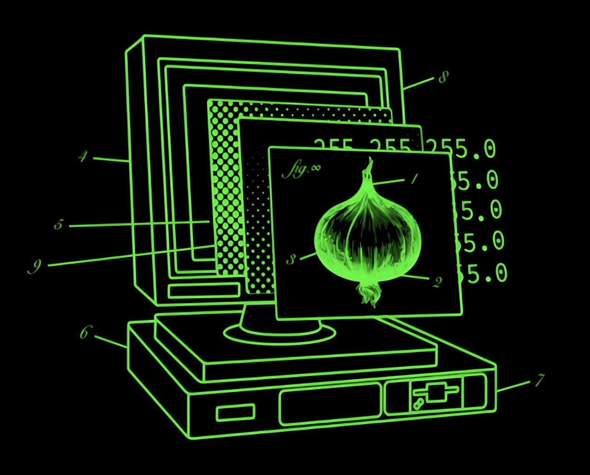

PRIVATE NETWORK LIST
⮕I2P network
⮕Hyphanet
⮕OpenNIC
⮕AnoNet
⮕Alienet
⮕ClearNet
⮕ChaosVPN
⮕ZeroNet
⮕dn42
>
Сеть уровня 9

Website Owner:
lrbilool
Privacy: 4096
Tor : Active
Beijing Time:
05/16/25 00:00:
51
AM
Enter the Deepest Darkest Internet Abyss LION777 Node Database. All Sites are Unsafe, OFFLINE, and/or has gone unchecked.
[ClearNet] .chat .cab .cf .ga .gq .tk .ml .exposed .ninja .wtf .rip
[DarkNet TOR only] .onion
[Hyphanet IP and addresses]
[ChaosVPN] .hack
[OpenNIC] .bbs .bit .chan .cyb .free .dyn .geek .gopher .indy .libre .null .o .oss .oz .neo .parody .pirate
[AnoNet] .ano
[AlieNet] .anon
[Misc.] .i2p network .dn42 .0net .Polaris .ZeroNet
[View at own risk]|Archived and Educational Purposes Only. |